Game Of...
Connect with your friends and people from around the world.
Share with others who enjoy the same sports, who want to push each other to progress and of course, have fun!

The Client Brief
We noted that there was a strong pull towards creating content, sharing content, and collaboration.
Our client wanted to look into the options of creating a sharing, collaborative cloud storage service.
Upon taking a closer look at the clients brief, we soon realised we had to start from the ground up.
The Client knew what they wanted but...
The Problem
-
Didn’t know their target audience
-
Didn’t have a brand identity
-
Uncertain how to execute
The Solution
-
Explore their target audience
-
Create a brand identity
-
Discover the best ways to communicate to the users
The Focus
- Collaboration
- Sharing
- Content Creation
Project Roles
- UX Research
- UX Design
- Visual Design
- Branding and Identity
Deliverables
Discovery Phase
- User Surveys
- Competitive Analysis
- User Personas
Info Architecture
- User Stories
- User Flows
- Wireframes
- Lo Fi User Test
Visual Design
- Concept & Identity
- Logo Design
- Moodboards
- Style Guide
- User Testing
- Hi Fidelity Mockups
- Clickable Prototypes
User Testing
- User Tests
- Hi Fi User Test
- Hi Fi Mockups
- Clickable Prototypes
Tools
- Adobe XD
- Invision
- Adobe Illustrator
- Google Documents
- Google Sheets
- Google Forms
- Usability Hub
- Facebook
- Whimsical
- Facebook
Discovery Phase
User Surveys
User Surveys were used to figure out who the target audience would be. Users were gathered using personal contacts, social media contacts and other means such as slack & discord channels.
Key Considerations
- How is cloud storage being used
- What do they value as the key features?
- Is there room for real-time collaboration?
Importance was placed on finding users that participate in the use of cloud storage software, as described in the brief.
27% Use cloud storage for personal use
Users want more storage to allow users to collaborate freely
72% Use cloud storage for collaboration
Majority found cost as the biggest turn-off
100% Use cloud storage for file sharing
Available storage and Accessibility to storage is of high importance
Conclusion:
Analysis of the data showed that a critical number of cloud storage users were not pleased with their cloud services due to lack of storage for space to create and collaborate freely.
Paying for a service just to store data was no longer an attractive alternative as they simply stop using them.
Competitive Analysis
I delved into the exploration of 3 major cloud storage companies:

The interface is very clear, but organising files into folders not particularly intuitive. The ability of saving files automatically, editing documents and live collaboration is really effective.
However, offline capabilities are restricted. Offering such an array of applications puts Google Drive in the lead.

Box is the only cloud based organisation app I have not used. I found the onboarding less seamless as the other two. Once on the homepage, the main features offered were integration with MS Office, Google Drive and more, it definitely increased my interest!
The biggest strength looks to be when Box Business is purchased. It has amazing integration and features once you pay more.

Dropbox
is commonly used for sharing a variety of media files. The interface feels clunky and has a lot of excess options that are jumbled to use and doing simple tasks overcomplicates things.
With the introduction of Dropbox Paper and the ambience of simplicity in sharing multimedia, it may just cross over into competing strongly with Google Drive. It wins in terms of access to media files.
Enter New Cloud Storage Service!
There is a gap for developing a product/service which appeals to active hobbyists, or recreational users. Most platforms focus on instruction, learning, keeping data and rare to find one that is a platform for sharing recreationally.
View AnalysisUser Personas
Personas help expand our understanding of user needs, exploring who our main audience is, and how we can try to solve their current frustrations. We could endeavor to see how Game Of… could motivate users to collaborate and interact with our services.

- Nikki Bishop
- 32
- Female
-
Occupation: Graphic Designer
-
Usage: Daily
-
Version: Paid
-
Artistic
-
Goals:
-
More free storage
-
Offline access/not wifi dependent
-
Increased searchability
-
Pain Points:
-
The cost
-
Lack of features
-
iCloud “it is a toilet”

-
Sara Jakob
-
36
-
Female
-
Occupation: Carpenter
-
Usage: Casual
-
Version: Free
-
Active
-
Goals:
-
More storage & ability to load bigger files
-
Incentives for use
-
Improved privacy & security
-
Pain Points:
-
Cost
-
Fear of account being compromised
-
Not enough free storage
Users had combined frustrations across the board although in slightly different forms. Knowing their goals was important but addressing pain points was paramount.
Information Architecture
User Stories
Narrowing down the hierarchy of tasks was essential for establishing what was going to be mandatory for users to store, create, share and collaborate with the developing idea, Game Of…
Wireframes & Testing
Sketching up different examples to test the format of how services were offered, was absolutely key in getting the ball rolling for the project. Formulating a direction for wireframing Game Of… was

4 -UP sketching was used before exploring more integrated versions. This allowed freedom to sketch without too much analysis and offered a more freehand flowing approach.
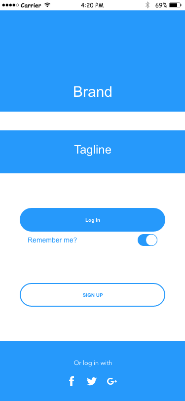 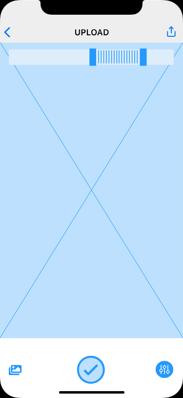 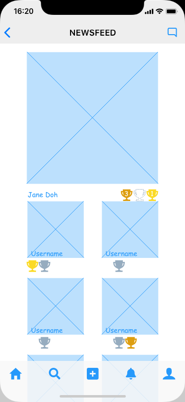 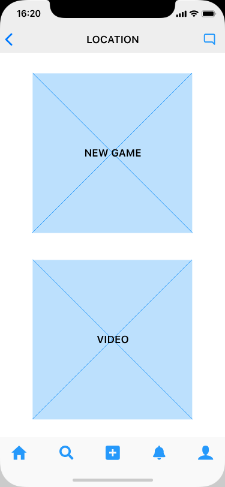 View WireframesAfter sketching some wireframes on whiteboard, a digital prototype was created for the first round of usability testing.
The aim of the deployed prototype was to test if the design was clear for users to navigate with ease.
Key Takeaways:
These screens were in need of clarity, such as a button-light to indicate when it was someone’s turn as the box wasn’t an obvious indicator, as well as the “pending user screen being somewhat evasive in obvious signals. It can be problematic to communicate things which may depend on imagery and colour in design, but the clearer it is here, the less it will need to depend on such assets later in the design.
Visual Design
Concept & Identity

Using these values and brand characteristics we created a moodboard to see where current popular image searches were coming up based on our key values.


Colour Scheme
An orange hue was originally the chosen hue but was quite soft for the image needed.
Orange represents things like enthusiasm, determination, success, encouragement and stimulation Red is a very emotionally intense color. It enhances human metabolism, increases respiration rate, and raises blood pressure.

Combined with the original undercurrents of orange with the slight “coral” colouring, it combines these aspects.
Logo Design
In keeping with the geometric fonts, we began to sketch up some ideas for a name for our site.
Simple enough to stand out without cluttering a space, dynamic enough to change over time, or use elements of the word mark as icons throughout the app
Hand Sketches
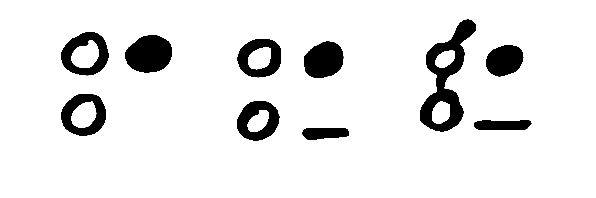Digital Sketches
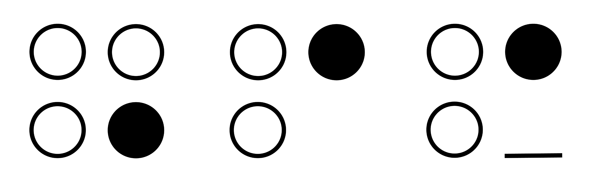“Game Of…” allows space for continuation of the wording while still keeping it’s own identity. The ability to abbreviate into “G.O.” sealed the deal for the decision.
Digital Iteration Font
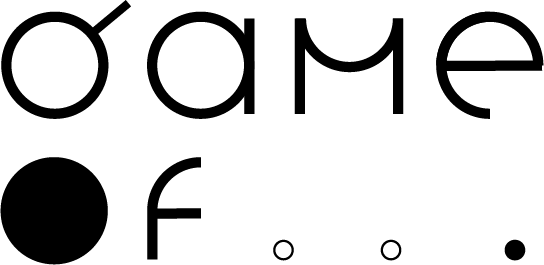Game Of… and the circular iconographic logo is representative of movement and motion. The icon is an abstract representation of the brand.
Digital Iterations
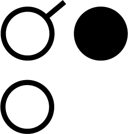Keeping the logo somewhat monochromatic allows for future use of applying a colour to represent what activity you will be playing.
With Colour
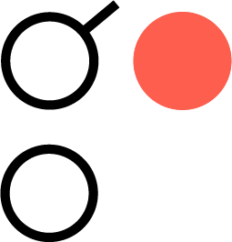Typography
To keep with imagery of flow, consistency and togetherness, we wanted to go with a geometric font.
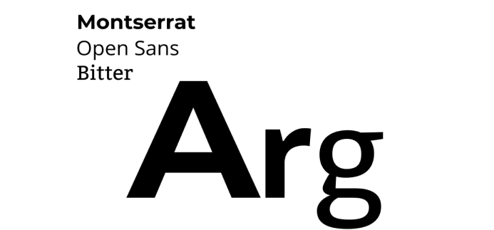Something clear, concise and bold, yet playful and inclusive. A humanist font added an extra layer of creativity that we wanted to reserve for the user to utilize.
Style Guide
We refined our typography, icon and wordmark, imagery, iconography, colors and funneled them into our Style Guide for Game Of... that acted as the bible for outlying the visuals and their weights to the site.
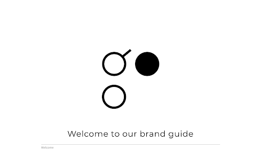 Style GuideHi Fidelity Mockups
After creating the aesthetic styling of Game Of…’s branding and guidelines, creating the concepts into high fidelity mockups began.
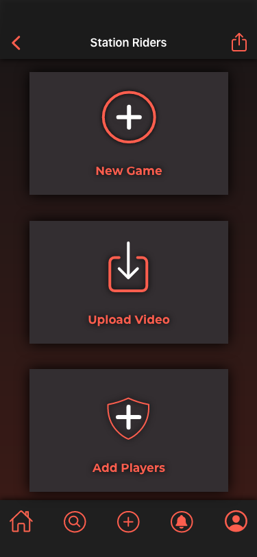 Hi Fi MockupsUser Testing and Iterations
Preference Testing
Below is an example of an area in which a user and I discussed design changes that could be made to make the usability clearer and more concise.
Before
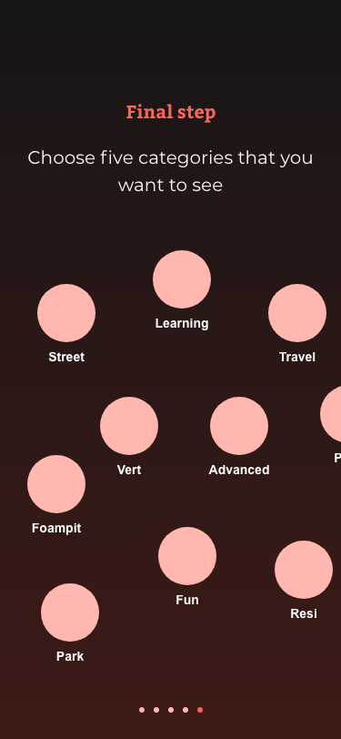After
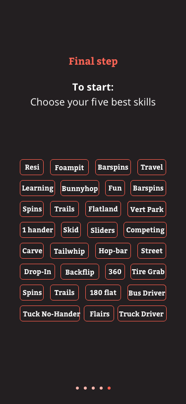It was discussed that perhaps tabs would be a better option, and offer more clarity of choices of content.
Which Slider do you prefer:
White (left) or Colour (right)?
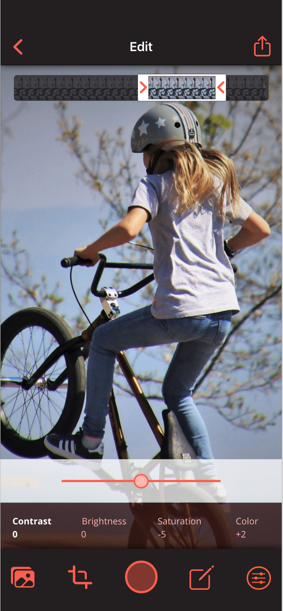 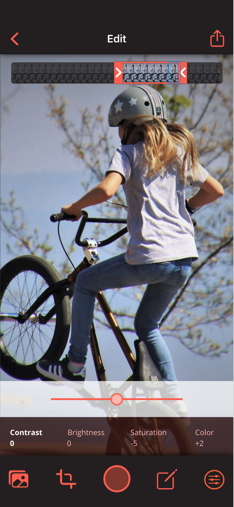For the contrast background, do you prefer it block background, or faded?
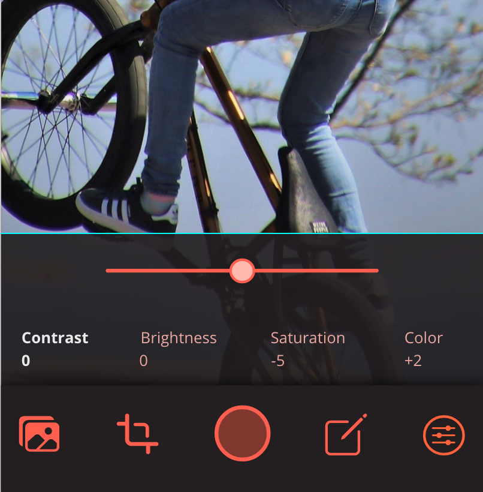 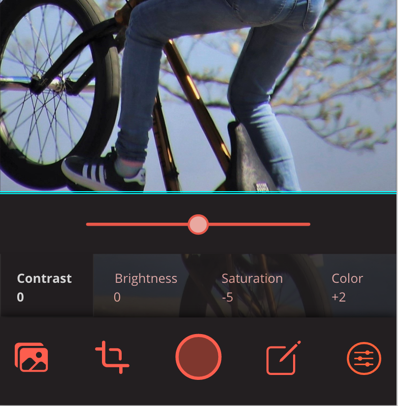Do you prefer the lighter slider button-light on the left, or the darker one on the right?
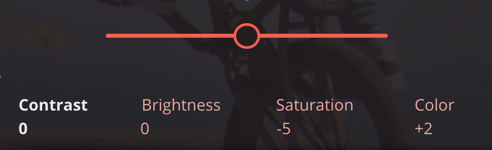 Test Results
The Solution
Explored the target audience
Created a brand identity
Discovered the best ways to communicate to the user
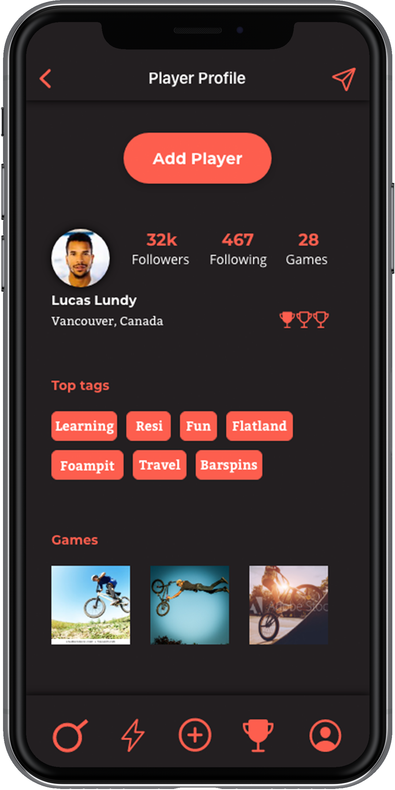 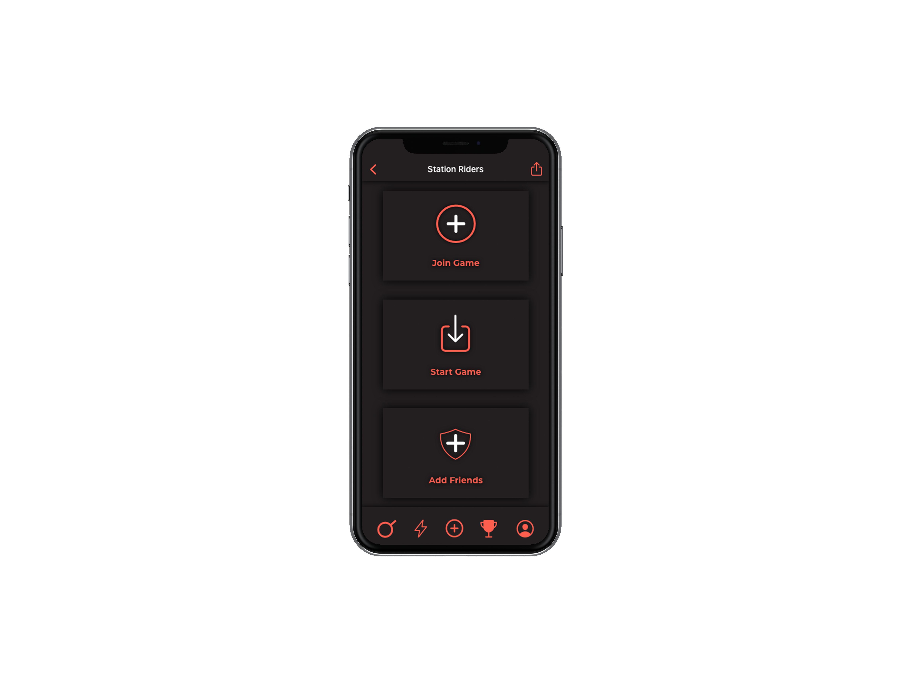 Design Updates